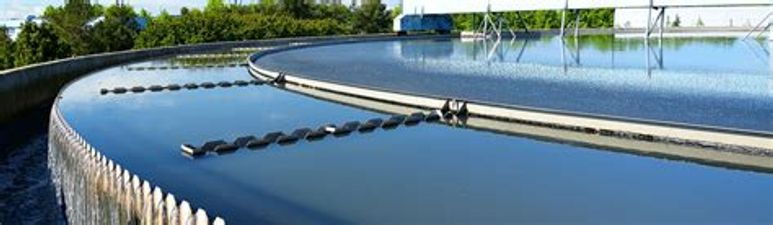
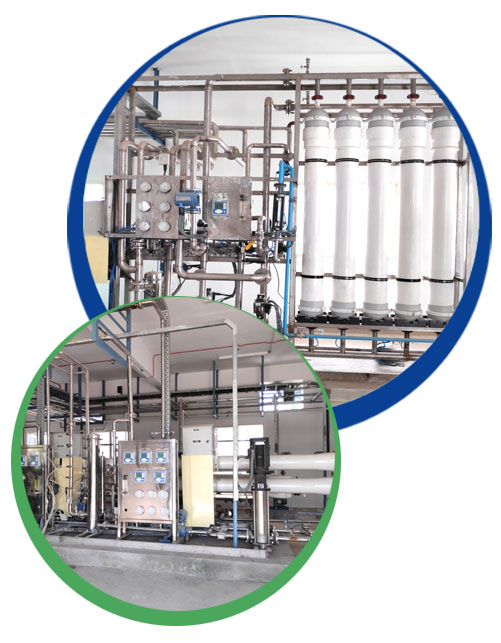

UF & RO Systems
UF membranes reject or separate high molecular weight solutes as well as suspended solids, colloids, and macromolecules
Reverse osmosis technology for Total Dissolved Solids.
Key Features
- Membranes specially formulated from modified PES or PVDF
- Customized design options based on the feed & process requirements
- Integrated CEB and CIP system
- Semi-automatic / fully automatics options are available
- Auto adjustable recovery (Optional)
- Auto monitoring feed conductivity, Feed pH (Optional)
- Inbuilt CIP system
- Energy recovery technology for desalination sectors
- Complete remote monitoring solutions available
- In-House Skid assembly for UF/ RO skids
- Packaged systems for feasible sizes
- UF & RO Systems
Application
- Process water
- Boiler feed
- Recycling of STP
- Drinking water
- Desalination
